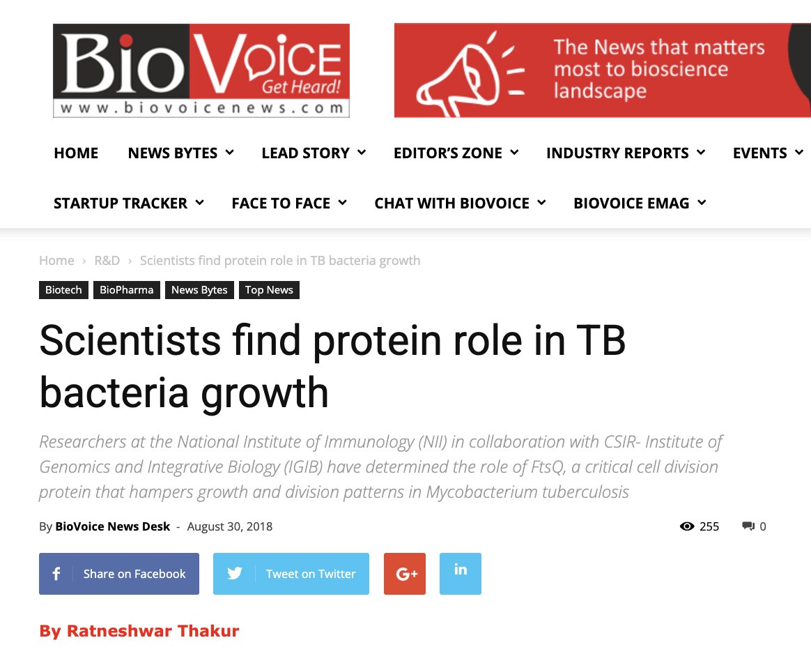
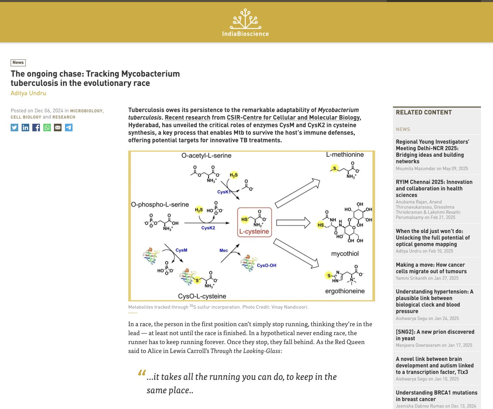
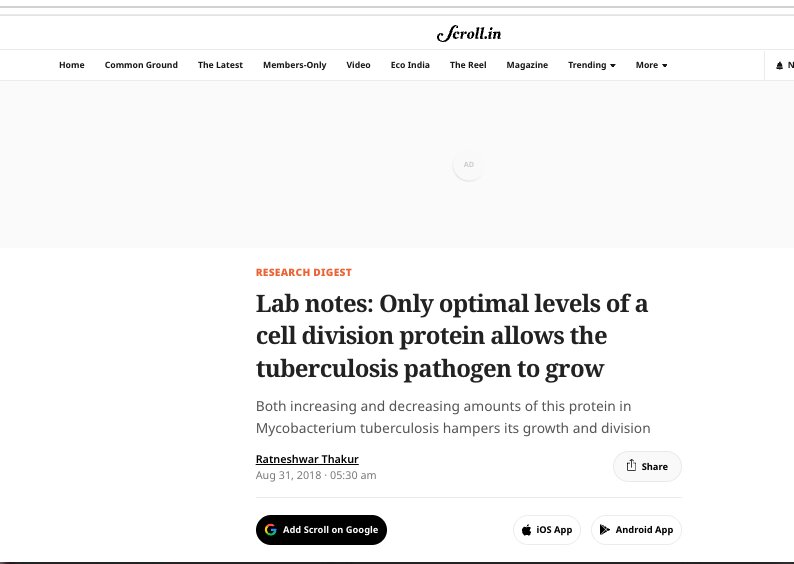
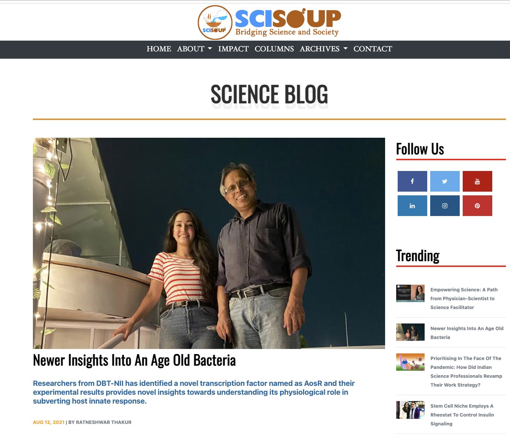
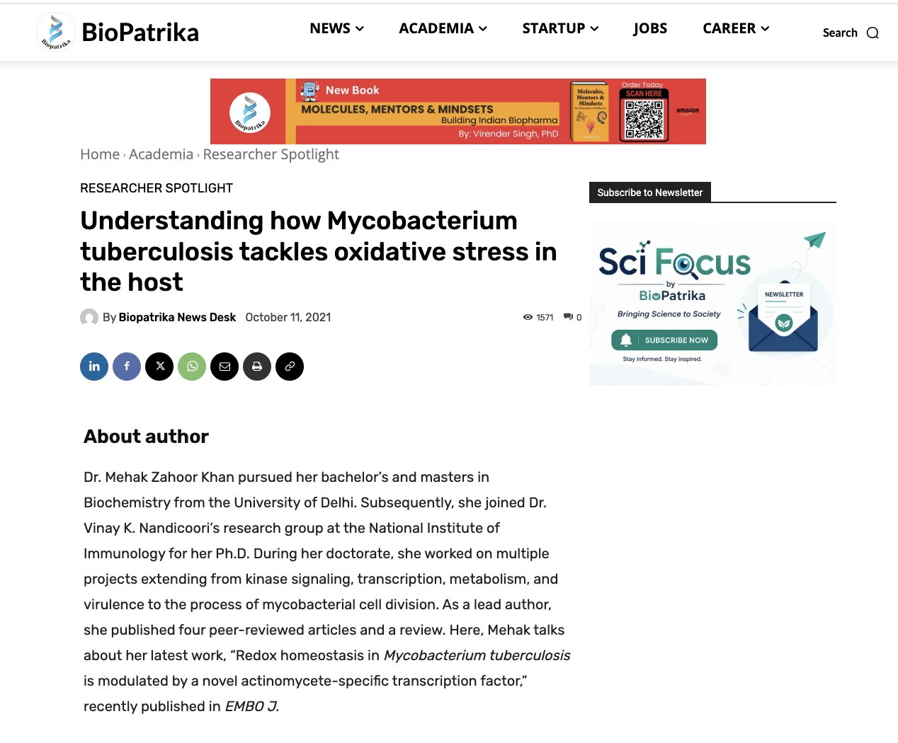
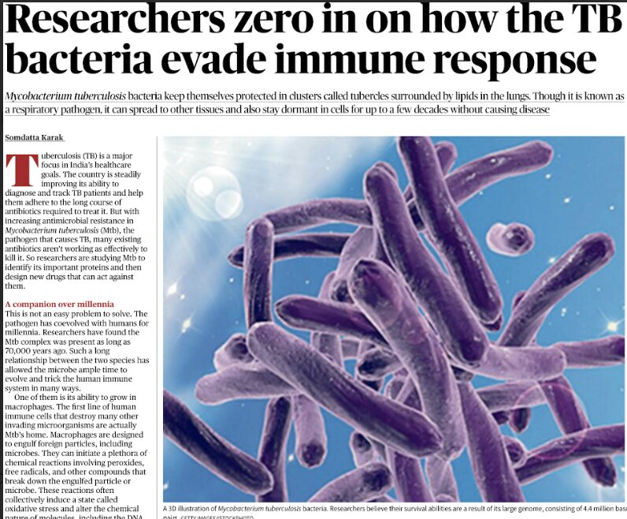
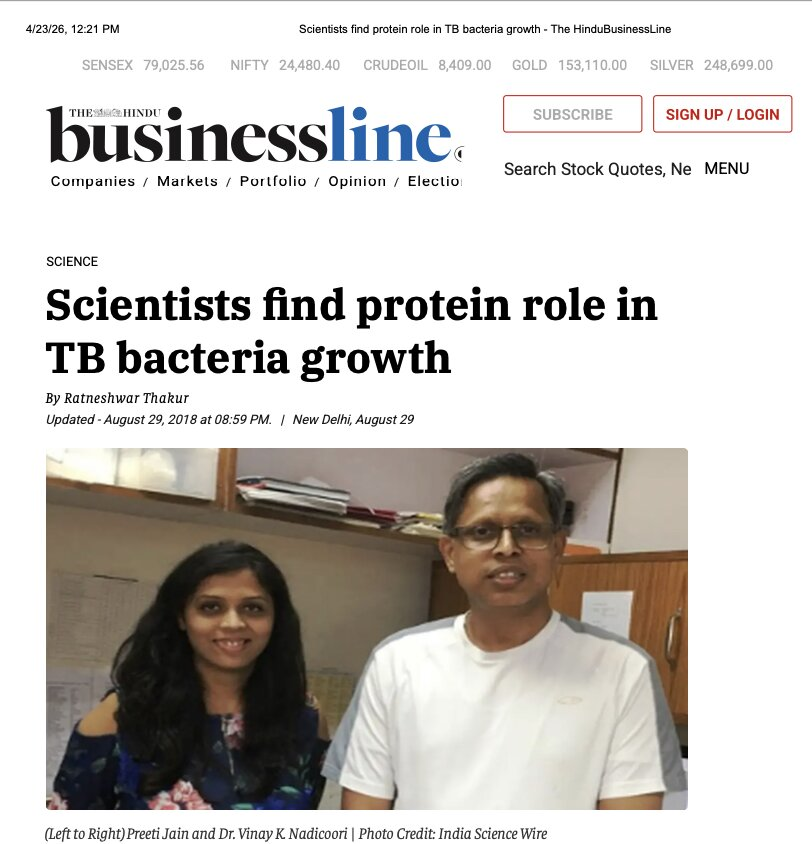

I am a bacterial immunologist and vaccine development scientist dedicated to bridging fundamental research and therapeutic innovation. My career spans translational immunology at world-class institutions—from the Ragon Institute of MGH, MIT and Harvard and the National Institute of Immunology in India to top innovative biotech including Moderna Therapeutics and Omniose.
My research focuses on understanding protective immunity against infectious diseases and translating those insights into next-generation vaccines and antibody therapeutics. I combine systems serology, functional immunology, and multi-omic approaches to define disease mechanisms and enable rational therapeutic design.
Current role: Scientist III (Principal Scientist equivalent) at Omniose, leading functional immunology for bacterial vaccine development and NIH-supported programs targeting critical global health pathogens.
Expertise: Monoclonal Antibody Discovery · Antibody Engineering · Vaccine Development · Systems Serology · Functional Immunoassays · Translational Research · Program Management · Scientific Leadership
Advancing understanding of protective immunity and translating discoveries into therapeutic solutions
Successfully led monoclonal antibody and nanobody discovery campaigns for at least six bacterial targets from human PBMCs and immunized animals.
Advanced antibody engineering for enhanced potency, affinity, half-life, developability and immune effector functions. Extended approach across S. aureus, Shigella, RSV, SARS-CoV-2, and cancer targets.
Led antigen selection and immune profiling for TB and Malaria vaccines. Demonstrated preclinical efficacy of multivalent mRNA candidates surpassing current BCG vaccine performance.
Generated high-dimensional antibody datasets (182K+ features) across multiple pathogens. Defined protective humoral signatures enabling rational vaccine design and patient stratification approaches.
Optimized opsonophagocytic killing, serum bactericidal, ADCP, ADNP, ADCD assays. Reduced manual processing by 50%. Standardized functional readouts for vaccine and therapeutic evaluation.
Synthesized systems serology, spatial transcriptomics, RNA-seq, and proteomics. Identified antibody-mediated disease mechanisms in cancer. Designed innovative therapeutic strategies.
National and international recognition for scientific excellence (most recent first)
Technical expertise and professional capabilities
Peer-reviewed research in high-impact journals (most recent first) | click titles to read full publications
Featured in leading science publications and media outlets







Conference presentations and speaking engagements
Collaborate on vaccine development, translational immunology, and infectious disease research